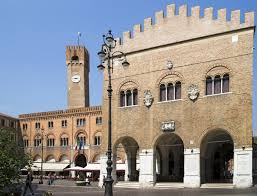
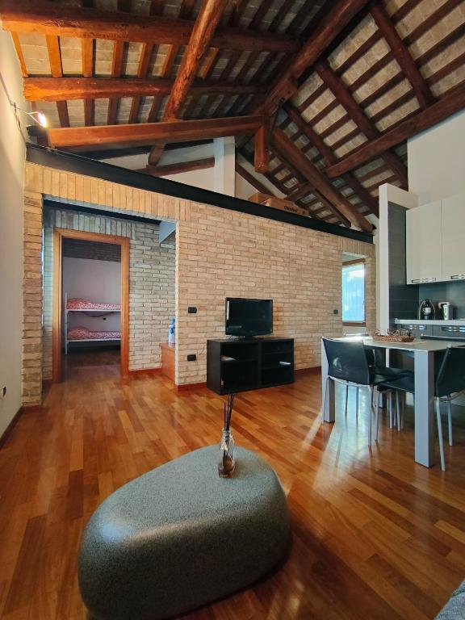
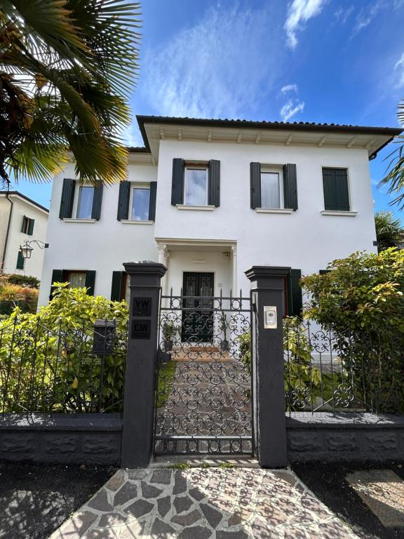

Explore our top 3 greatest places in our city!
Explore the beautiful historic city centre and visit “Piazza dei Signori” or “Palazzo del Podestá”. Don't miss the famous “Fontana delle tette” and the medieval gates like Porta San Tommaso.

UNESCO Heritage hills located in Conegliano and Valdobbiadene. A breathtaking landscape dedicated to producing the world-famous Prosecco wine.

A complex of natural and artificial caves in Fregona. Features deep waterfalls shaped by the stream for over a million years.

Treviso Airport (TSF) is well connected by shuttle buses and taxis, reaching the center in 10-20 minutes.
Yes! It's only 30-40 minutes by train, offering a quieter and more affordable stay than Venice.